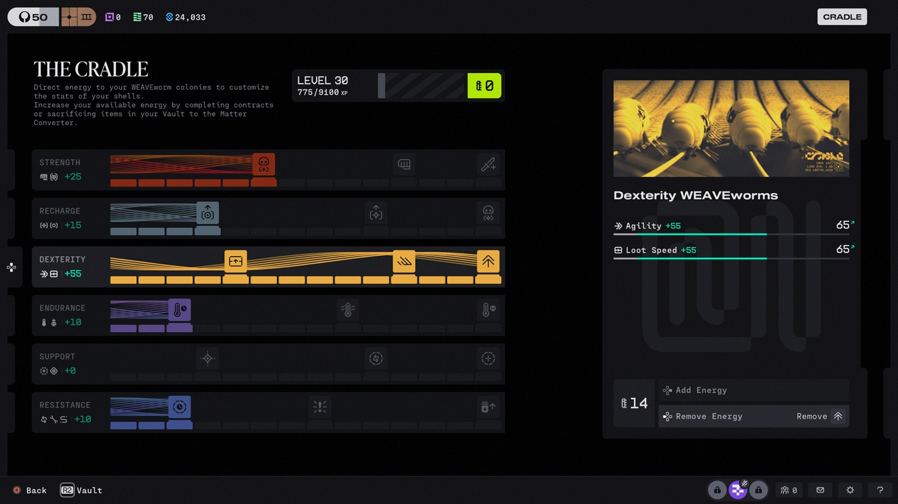

Seasons: how the story unfolds
Marathon launched on March 5, 2026 and tells its story in seasons; Bungie promises that player actions shape what happens next. Season 1 already proved that literally.
Season 1 // "Death Is the First Step" (Mar 5 - Jun 1, 2026)
The start of the "gold rush": per Bungie's own framing, the beginning of a proxy war between rival factions competing for power and for answers about the 30,000 lost souls of New Cascadia. Launch content: three surface zones, 28 weapons, six shells, plus a ranked beta in late March. The climax was the ARG (details in section 12): the community collectively unlocked the way to orbit, into the Cryo Archive. The season ended June 1 with the game's first full progression wipe - in-universe, your Runner's memory degrading between transfers. The wipe is lore.
Season 2 // "Nightfall" (Jun 2, 2026 - current)
The season's theme is escalation. The UESC, enraged by the constant raids, builds up its forces and hides its secrets ever more desperately. And all that activity is waking something up: the Anomaly is changing, and after sundown the planet gets genuinely frightening. The result is a triangle: Runners versus the UESC versus something in the dark that couldn't care less about either side.

New this season: the Sentinel shell, the Night Marsh zone, the Cradle progression system (convert looted gear into energy, invest it into permanent stats), two new weapons - the KKV-9SD and the D54 Battle Pistol, the season's only genuinely new guns - implants reworked into fixed perk-first packages, and an experimental PvP-lite "Sponsored Survival" mode. And the headline: a new enemy in the dark - officially teased as a foe Runners have never encountered; Kotaku's Ethan Gach described the trailer silhouette as a cross between a Xenomorph and Slender Man. Fan theories range from Runner-mimics to fungal hosts tied to the "Class B Anomalous Material" Codex entries. What it actually is remains the season's biggest mystery. unrevealed
Mid-season, the stakes rose again: the 1.1.5 mid-season update (July 21-22, 2026) has already shipped. It brought Vault Breaker - a roguelite PvE mode in the Cryo Archive where your loot stays behind, live for a limited window (July 21 - August 4) - and Cradle Evolution, a voluntary full reset of the Cradle tree open from Runner level 70+ (up to seven stages, each paying out +1 maximum Energy), plus exclusive cosmetics. The same patch carried a major balance pass that shifted the weapon meta - some guns got buffed, others nerfed; that is exactly why the 06-B // Arsenal section now covers each gun's role and lore instead of live numbers that go stale with every patch. Full patch notes: Bungie's news feed. And the calendar is already set: Season 3 starts September 22, 2026.

The Cradle: a nursery for your body
Season 2's headline system deserves its own briefing - because the lore under it is better than anyone noticed. In-game, the Cradle is described as directing energy to WEAVEworm colonies to retune your shell's stats. Read that again through section 05: the worms that wove your body are always hungry, and the Cradle is where you feed them. Every spare gun you sacrifice in the Matter Converter goes, in fiction, down a worm's throat - and the colony re-weaves your biomata a little stronger, a little faster. Character progression as feeding time. Sekiguchi calls it a service; the worms call it lunch. Even the naming commits: the capstone perk of the Dexterity track is literally called WEAVEworms.
In practice: you earn Energy two ways - completing contracts, or opening your Vault and feeding spare loot to the Matter Converter (batch-select was added specifically so you can clear junk in one minute after every session; the better the item, the more it yields). Energy goes into six stat tracks - Strength, Recharge, Dexterity, Endurance, Support, Resistance - each with node milestones and a signature perk up top (Leech for Strength, faster ability cycling under Recharge, revive perks like Factory Reset under Support). The whole tree is shared across all your shells, respec is free, unlimited and instant, and maxing everything means Cradle level 84.

Advice the community has settled on: Endurance first - heat capacity is this game's stamina, and everything in Marathon is positioning; the cheap Quick Vent and Heat Dissipation nodes change how aggressively you can play from day one. After that, match tracks to your shell's identity instead of spreading points like peanut butter - even builds are mediocre at everything. And chase nodes, not raw numbers: Energy parked short of the next milestone does exactly nothing until you commit.